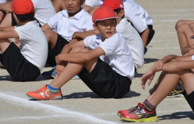

運動会とサッカートレセン県大会 2017-9-30・10-1
土曜日9月30日はハルの学校の運動会でした。
暑すぎず寒すぎず、運動会としては最高のコンディションだったかな～。

ただ・・・今年の運動会は
夏休み前頃からのいろんなごたごたに心が持って行かれてたせいか
今ひとつ気持ちも入らず、当日の朝になってお弁当を用意していてすら、
中途半端な気分のままでした・・・しょぼん。
そのせい ? ではないと思いますが・・・
当の本人も今年はいまいち気合いが入らず(汗)。
去年まで順当に選んでもらってきた、学年代表によるリレーの選手にも
今年は選出されず、徒競走も2位・・・。
写真は撮ったんですけどね、一応(笑)。
でも、やっぱり何となく絵になるようなショットではなかったなぁ。
唯一・・・
5、6年生による騎馬戦は見ていてもおもしろくて盛り上がりました(笑)。
ハルは騎馬に乗りたかったみたいですが、
「重いっ !! お前は上はムリ ! 騎馬決定 ! 」と言われた～と、
そー言えば何時だったか言ってましたかねぇ～(笑)。
ただ、写真は撮れんぜ(汗)・・・馬だからどこにいるのかもわかんない～(笑)。
昨日10月1日はトレセンの県大会「カイヌマ杯」に参加しました。
グループリーグの対戦相手は先週と同じで、東三河と東尾張。
1コ勝ったんですよ～東三河には7-2で。
でも、東尾張にはやっぱり負けちゃいました、残念～。
ブロックで勝ったチームは、愛知県代表として東海大会に出場するそうです。
すごいなぁ～全国大会もあるのかな・・・。
ハルは・・・昨日はいまいちぴりっとしなくていいとこなかったです。
不安定なんだよね～前からそうなんですが(笑)。
びっくりするくらいいい時があるかと思えば、
ダメな時は「起きてる ? 」ってくらいぐだぐだなんだよ・・・。
いつも安定のパフォーマンスができなきゃ意味ないんだけどねぇ(汗)。
期待された「その時」にベストな働きができるかどうかって、
やっぱり気持ちの問題なんじゃない ?
やっぱり弱いんだなぁ・・・。
はげましたり、ケツたたいてやったり・・・
ハル個人サポーター(笑)としては、何とかしてやりたい気持ちはあるんだけど、
なんせこっちの方がいっぱいいっぱいで、余裕もないもんで
なんてゆーか・・・笑っちゃうくらい空回りしちゃってる感、満載なのね～(笑)。
はー、親も修行だわ～・・・(泣)。